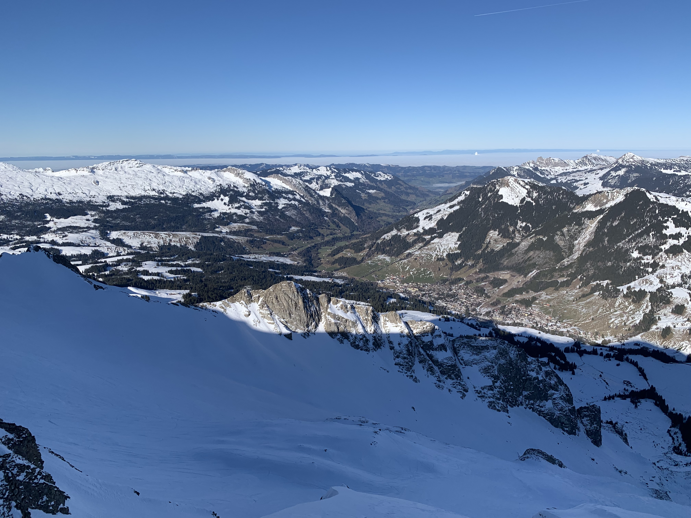
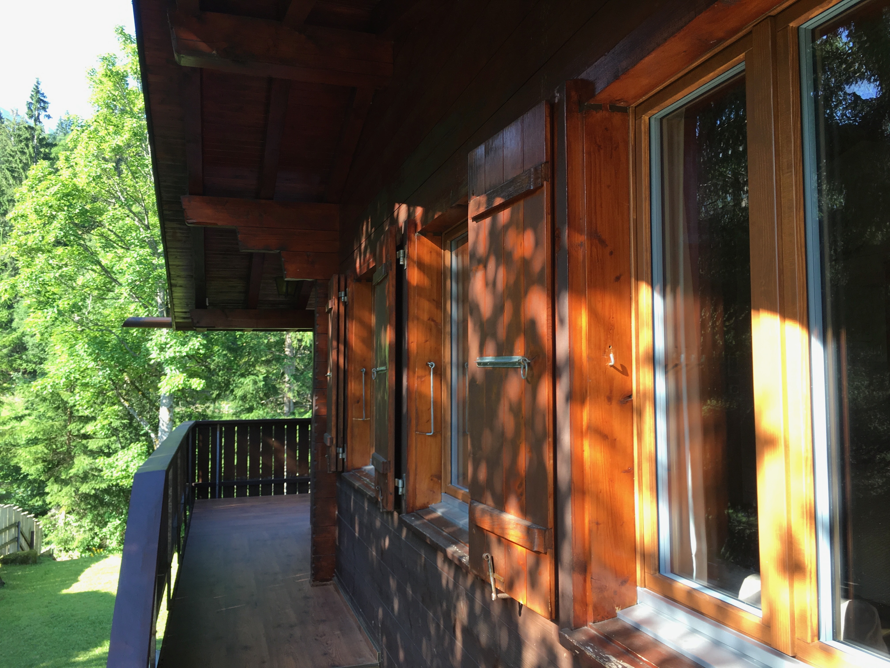
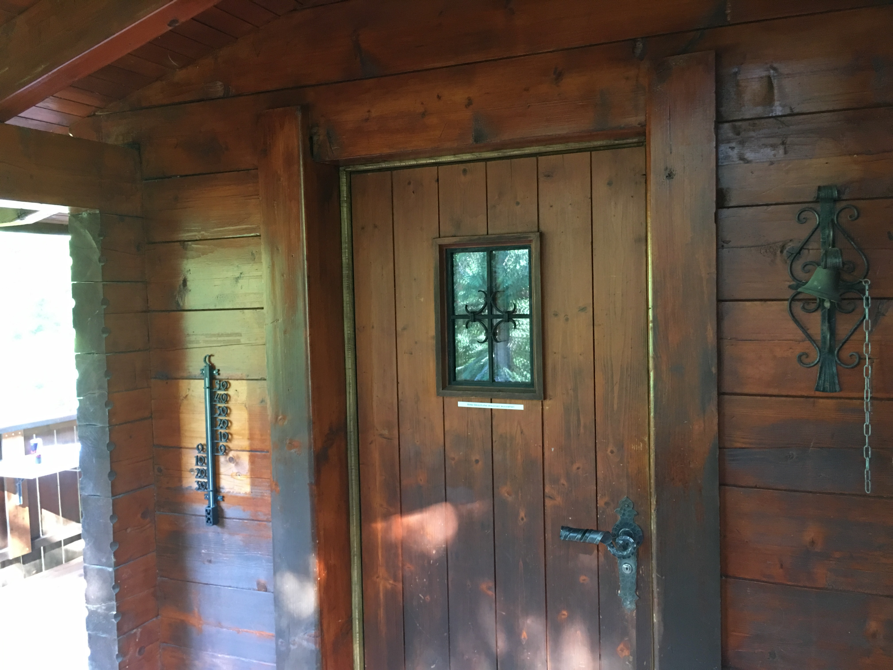

Standort
Umgebung & Aktivitäten
Rothornstrasse 40, 6174 Sörenberg
UNESCO Biosphäre Entlebuch
Eine der artenreichsten Regionen der Schweiz
Das Entlebuch ist seit 2001 als UNESCO Biosphäre anerkannt – eine der ersten Biosphären weltweit, die durch eine Volksabstimmung entstanden ist. Riesige Moorlandschaften, tiefe Wälder und majestätische Alpenketten prägen diese einzigartige Landschaft.
Sörenberg liegt auf 1'160 m ü. M. im Herzen dieser Biosphäre, umgeben von markanten Gipfeln: dem Brienzer Rothorn (2'348 m), der Schratteflue – Hängst (2'091 m) und der Haglere (1'948 m). Die Dampfzahnradbahn auf den Rothorn, die seit 1892 den Gipfel erklimmt, ist bis heute ein unvergessliches Erlebnis.
1'160
m ü. M.
Höhe Sörenberg
2'348
m ü. M.
Brienzer Rothorn
13
Anlagen
Skigebiet


Alles in Reichweite
50 m
Postautohaltestelle
350 m
Sesselbahn
500 m
Dorfzentrum & Restaurants
550 m
Gondelbahn
550 m
Lebensmittel
17 km
Bahnhof
Aktivitäten
Das ganze Jahr erlebenswert
Winter
-
Skifahren13 Anlagen zwischen 1165 m und 2340 m Höhe – vom Chalet sind es ca. 8–10 Minuten zu Fuss bis zur nächsten Bahn. Pisten für alle Niveaus.
-
Schneeschuh & WinterwandernMarkierte Schneeschuhrouten durch verschneite Wälder und Moorlandschaften.
-
SchlittelnNatürliche Rodelabfahrten für Gross und Klein – familienfreundlicher Winterspass.
-
EislaufenEislauffläche in der Region – Spass auf dem Eis für die ganze Familie.
-
LanglaufenGepflegte Langlaufloipen im Entlebuch für Klassisch und Skating.
-
Ski- & SnowboardkurseSchneesportschule direkt vor Ort – ideal für Anfänger und zur Technikverbesserung.
Sommer
-
WandernAusgedehntes Wanderwegnetz durch die Biosphäre – von gemütlichen Spazierwegen bis zu Gipfeltouren.
-
MountainbikenAbwechslungsreiche Bike-Trails durch Wälder und Alpwiesen für alle Fahrkönner.
-
Bergjuwel EiseeIdyllischer Bergsee auf ca. 1'650 m ü. M. – perfektes Ziel für eine Wanderung mit Ausblick.
-
Moorwelten RossweidEinzigartiges Moorerlebnis mit dem Erlebnisweg «Mooraculum» – Naturwunder hautnah.
-
Sommerrodelbahn RischliNervenkitzel auf der Sommerrodelbahn – Spass für die ganze Familie.
-
ParaglidingThermik und Alpenpanorama – Sörenberg ist ein bekannter Startplatz für Gleitschirmpiloten.
Ganzjährig
-
Brienzer Rothorn BahnDie Dampfzahnradbahn auf den Rothorn (2'348 m) – seit 1892 ein unvergessliches Erlebnis mit Panoramablick auf Alpen und Voralpen.
-
UNESCO BiosphäreExkursionen, Kurse und geführte Erlebnisse in einer der artenreichsten Regionen der Schweiz.
-
Grillstellen & PicknickZahlreiche Grillstellen und Picknickplätze inmitten der Natur.
-
Fahrrad-VerleihFahrrad-Verleih direkt neben dem Chalet – spontane Radtouren durch die Biosphäre sind sofort möglich.
-
Lokale ProdukteFrischer Alpkäse, Entlebucher Spezialitäten und regionale Küche direkt vom Produzenten.
Kulinarik
Unsere Restaurantempfehlungen
Rischli
Beliebtes Bergrestaurant mit herrlicher Aussicht – ideal nach einem langen Ski- oder Wandertag. Herzhafte Bergküche in gemütlicher Atmosphäre.
Bergwelten Salwideli
Auf dem Sattel zwischen Sörenberg und dem Entlebuch gelegen. Einzigartige Lage mit Panoramaaussicht und typisch schweizer Gerichten.
Treffpunkt
Das zentrale Dorfrestaurant in Sörenberg – gesellig, unkompliziert und immer eine gute Wahl für die ganze Familie.
Alpenrösli
Klassisches Bergrestaurant mit Tradition. Frische lokale Küche, freundlicher Service und das typische Sörenberger Flair.
Anreise
So finden Sie uns
Mit dem Auto
A2 Richtung Luzern, Ausfahrt Wolhusen, dann via Entlebuch nach Flühli und Sörenberg. Ca. 40 min ab Luzern.
Mit dem ÖV
Zug nach Schüpfheim, dann mit dem Bus Richtung Sörenberg (Entlebuch Bahn). Die Postautohaltestelle befindet sich nur 50 m neben dem Chalet.
Adresse
Rothornstrasse 40
6174 Sörenberg
Schweiz